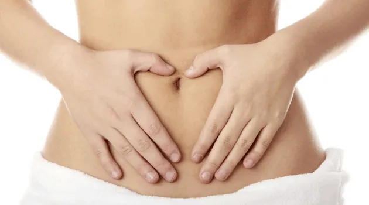
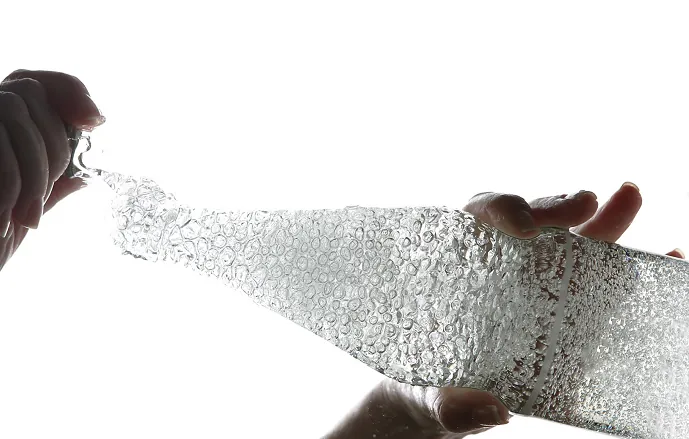
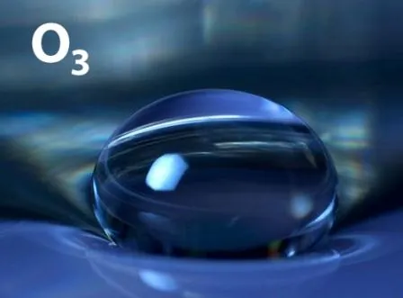
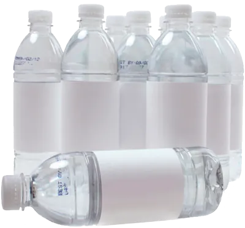

Статьи о воде
Полезные материалы о качестве воды, очистке и здоровом образе жизни

Акции на воду
Условия первого заказа воды Crystal Water в Броварах и Киеве: первая бутыль для пробы бесплатно,…

Бутилированная вода в рационе
Чем бутилированная вода отличается от бытового фильтра: очистка, контроль, удобство и расходы. Сравнение…
Бутилированная и минеральная вода
Чем очищенная питьевая вода отличается от минеральной: источник, минерализация, назначение и выбор воды…
Бутилированная и фильтрованная вода
Чем бутилированная вода отличается от фильтрованной: как их очищают, что с расходами, удобством и…
Видео Киева 1983 года
Ретро-видео Киева 1983 года с высоты птичьего полёта: улицы, зелень и широкий Днепр. Как река связана с…
Видео: вода мира
Видео о подводном мире: океаны, рифы и глубоководные обитатели. Рассказываем, сколько воды на Земле,…

Виды воды
Основные виды воды: природная, минеральная, дистиллированная и очищенная питьевая. Чем они отличаются, для…

Вкус воды после осмоса
Какой вкус у воды после обратного осмоса, чем она отличается от водопроводной, почему кажется мягче и…

Вкус домашней воды
Почему вода из-под крана бывает с привкусом, как улучшить её вкус фильтром и когда стоит перейти на…

Вода без хлора
Зачем в водопровод добавляют хлор, почему вода пахнет бассейном и как убрать хлор: отстаивание, угольный…
Вода в офис
Как рассчитать объём воды для офиса, выбрать между кулером и помпой, наладить заказ бутылей 19,9 л и…

Вода в эко-таре
Как выбрать воду в многоразовой таре: на что смотреть в маркировке, как оценить бутыль самостоятельно и…
Вода для детей
Что смотреть на этикетке воды для детей, как подойти к воде для смесей и как соблюдать гигиену бутыли и…
Вода для малышей
Какую воду выбирать для ребёнка: чем отличается водопроводная и бутилированная, как готовить смеси, что…
Вода для отваров и настоев
Какую воду брать для травяных отваров, настоев и чая: как вода влияет на вкус, чем опасна самодеятельность…
Вода для растений
Чем полезен полив комнатных растений очищенной водой: жёсткость, хлор и налёт на горшках, особенности воды…
Вода для спортсменов
Вода для спортсменов: сколько и как пить до, во время и после тренировки, на что смотреть при выборе воды…

Вода и кальций
Какую роль играет кальций в воде, что такое жёсткость и почему основным источником кальция остаётся…

Вода и контроль веса
Помогает ли вода худеть: что можно сказать о питьевом режиме и контроле веса, как заменить сладкие…
Вода из бюветов Киева
Бесплатная вода из бюветов Киева и Броваров: от чего зависит её качество, как выбрать безопасный источник,…
Вода натощак
Стакан воды после пробуждения: откуда пошла привычка, как выбрать температуру и объём, когда подождать с…

Вода оптом
Как заказать воду оптом в Броварах и Киеве для офиса, кафе или клиники: расчёт объёма, залог за тару,…

Вода при беременности
Какую воду и сколько пить при беременности: общие рекомендации по питьевому режиму, на что смотреть при…
Дистиллированная вода
Что такое дистиллированная вода, как её получают, где применяют и почему её не принято пить каждый день.…
Доставка воды в Броварах
Как заказать доставку воды в бутылях 19,9 л в Броварах и Киеве: способы заказа, график работы, самовывоз,…

Доставка воды в Киеве и Броварах
Как работает доставка питьевой воды в Киеве и Броварах: порядок заказа, стоимость бутыли, залог, помпа,…

Доставка от производителя
Как выбрать надёжного поставщика питьевой воды с доставкой: вопросы о технологии очистки, таре, логистике,…

Ежедневно литр воды
Как выработать привычку пить достаточно воды: общие ориентиры по питьевому режиму, простые приёмы и роль…
Живая вода
Что называют «живой водой»: откуда пошёл термин, как отличить маркетинг от фактов и по каким признакам…
Зачем нужна очистка воды
Почему питьевая вода должна проходить правильную очистку: риски «природной» воды, роль обратного осмоса,…
Значение воды в жизни
Зачем организму вода, как распознать нехватку жидкости и построить простой питьевой режим. Практические…

Значение воды для организмов
Какую роль вода играет в живых организмах и в организме человека: растворитель, транспорт веществ,…
Как выбрать воду для дома
Как выбрать питьевую воду для дома: на что смотреть в источнике и очистке, как сравнить водопровод, фильтр…

Как заказать воду
Как заказать питьевую воду без лишних вопросов: чек-лист проверки поставщика, расчёт объёма, порядок…

Как работает обратный осмос
Как устроена и работает система обратного осмоса: предфильтрация, угольные блоки, мембрана, постфильтрация…
Какая вода нужна организму
Как отличить водопроводную, дистиллированную, минеральную и очищенную питьевую воду, на что смотреть при…
Какую воду пить
Какая вода подходит для ежедневного питья: чем минеральная отличается от очищенной и водопроводной, почему…
Качественная питьевая вода
По каким критериям оценивать качество питьевой воды: безопасность, pH, вкус, прозрачность. Как устроена…
Качество воды
Как оценить качество питьевой воды: простые домашние проверки, их пределы, лабораторный анализ, вода из…
Кофе при беременности
Можно ли пить кофе при беременности: как кофеин действует на организм, какая норма считается допустимой,…
Кулер для воды
Кулер для воды: нагрев, охлаждение, защита от детей, напольные и настольные модели. Как выбрать кулер для…

Минеральная вода
Чем отличаются столовая, лечебно-столовая и лечебная минеральная вода, как читать этикетку и когда лучше…
Минеральный состав воды
Чем отличаются артезианская, минеральная, очищенная (осмос) и водопроводная вода: источник, минерализация,…

Наука о воде
Что важно знать о воде: строение молекулы, необычные свойства, круговорот в природе и принципы очистки…
Норма воды в сутки
Как рассчитать суточную норму воды по весу, какие факторы её меняют, как понять, что жидкости не хватает,…

Нормы воды
Сколько воды пить в день: от чего зависит потребность, как прикинуть ориентир на килограмм веса, признаки…
Обеззараживание воды
Как обеззараживать воду дома и в походе: кипячение, фильтры, обратный осмос, озонирование. Что реально…
Обратный осмос
Обратный осмос: плюсы и минусы. Разбираем деминерализацию, сточные воды домашних систем, обслуживание и…

Обратный осмос
Как работает обратный осмос: мембрана, давление, что удаляется из воды, чем метод отличается от угольных…

Обратный осмос и доставка
Вода после обратного осмоса с доставкой в Киев и Бровары: как работает технология, что она убирает, что…

Озоновая стерилизация
Что такое озонирование воды, чем оно отличается от хлорирования, как озон обеззараживает воду и почему не…
Осмос и дистилляция
Чем обратный осмос отличается от дистилляции воды: принцип работы, состав на выходе, вкус, расход энергии…

Очищенная вода
Что такое очищенная вода, что содержит водопроводная и чем они отличаются по вкусу, жёсткости и…
Питьевой режим
Зачем организму вода, как выстроить питьевой режим, какие признаки нехватки жидкости бывают и почему важно…
Причины пить воду
Почему важен регулярный питьевой режим, как вода связана с самочувствием, вниманием и терморегуляцией, и…

Проверка качества воды
Простые способы проверить бутилированную воду самостоятельно: прозрачность, запах, вкус, накипь,…
Прозрачная вода Байкала
Чем известна прозрачная вода озера Байкал, почему она так чиста и чем прозрачность воды отличается от её…
Простой анализ воды
Как работает популярный домашний тест воды электролизом, что он реально показывает, чем отличается от…
ПЭТ-бутылки или многоразовая тара
Чем одноразовые ПЭТ-бутылки отличаются от многоразовой тары 19,9 л, как влияют на экологию и бюджет и как…
Роль воды для организма
Почему организму нужна вода, от чего зависит потребность в жидкости и как выстроить питьевой режим. Общие…

Системы очистки воды
Как работает многоступенчатая очистка воды Crystal Water: от механической фильтрации до осмоса и…

Схема обратного осмоса
Как устроена схема обратного осмоса: от предфильтра и угольного блока до мембраны, накопительного бака и…

Умягчение воды
Что такое жесткая вода, откуда берётся накипь и как работает умягчение: ионный обмен, обратный осмос,…
Фильтр в кулере
Нужен ли фильтр кулеру для бутилированной воды, как выбрать срок замены, как мыть кулер и помпу и на что…
Фото капли воды
Как сфотографировать каплю воды дома: посуда и фон, штатив, ручной режим, выдержка и диафрагма, работа с…

Химические добавки в воде
Какие реагенты используют в водоподготовке: хлор, коагулянты, фтор. Зачем они нужны и какие способы…
Холодная вода
Холодная вода и организм: когда прохладный напиток уместен в жару и после тренировки, кому стоит быть…
Храмы воды Украины и мира
Рассказываем о храмах воды: Киёмидзу-дэра в Японии, храм Загван в Тунисе, святилище на Бали и церковь…
Хранение бутылей с водой
Как хранить бутыли с водой дома и в офисе: свет, температура, гигиена, вскрытие, уход за помпой, перенос и…

Чистота воды и очистка
Почему прозрачная вода без запаха может содержать примеси, какие ступени очистки их удаляют и как работает…

Что знать при покупке воды
Что проверить при покупке бутилированной воды: маркировка, пломба, срок годности, технология очистки,…